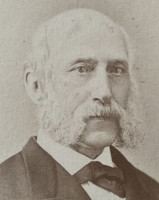

Auguste Jules Joseph LONGHAYE — Né le 28/08/1812 à Lille — Décédé le 28/11/1878 à Lille
Auguste Jules Joseph LONGHAYE
Né le 28/08/1812 à Lille
Décédé le 28/11/1878 à Lille
Résumé
Auguste Jules Joseph Longhaye est un industriel et philanthrope lillois appartenant au tissu serré du patronat textile de la capitale des Flandres. La famille Longhaye s'inscrit dans ce mouvement de familles qui, issues du monde des fabricants et négociants lillois du XVIIIe siècle, entrent progressivement dans la grande industrie par le jeu des mariages et des associations commerciales. Son père Louis Anselme Longhaye, né en 1776 à Lille, appartient déjà aux milieux de la manufacture lilloise. Il épouse Virginie Van de Weghe, issue d'une famille flamande de Gand établie à Lille, dont le nom est bien connu dans les cercles industriels et mondains de la ville. La ville de Lille, dans la seconde moitié du XIXe siècle, concentre d'importantes filatures de coton : en 1850 on y dénombre 34 filatures utilisant près de 400 000 broches.
Riche négociant et chevalier de la Légion d'honneur, Auguste Longhaye est l'une des figures marquantes de la bourgeoisie philanthropique lilloise de son temps. Il s'engage avec énergie dans les œuvres de bienfaisance militaire et sociale : il est président des comités de secours aux soldats blessés et fondateur de la Caisse des invalides du travail, institution pionnière destinée aux ouvriers victimes d'accidents. En 1870, lors de la guerre franco-prussienne, il parcourt avec ses frères médecins Édouard Longhaye et le docteur Houzé de l'Aulnoit les champs de bataille du Nord pour porter secours aux blessés et organiser des ambulances. Il exerce alors les fonctions de délégué régional de la Société de Secours aux blessés militaires auprès du 1er corps d'armée — fonctions auxquelles Léonard Danel lui succèdera en 1878.
C'est en reconnaissance de cet engagement qu'il est nommé chevalier de la Légion d'honneur le 1er juillet 1871, par décret du ministre de la guerre.
Sa magnifique maison du boulevard Vauban est un lieu de sociabilité de premier plan, où se retrouve l'élite industrielle et préfectorale de Lille. La maison de négoce qui porte son nom donne naissance à la société Descamps-Longhaye, dont Mathilde Longhaye épouse Maurice Descamps en 1867 — alliance qui unit deux des grandes dynasties textiles lilloises.
Sa fille Amélie Longhaye épouse Georges Saint-Léger, devenant ainsi la grand-mère paternelle d'André Saint-Léger, administrateur des Établissements Agache.
Sources :
{kind=link}

📷 Cliquez pour voir 1 photo(s)